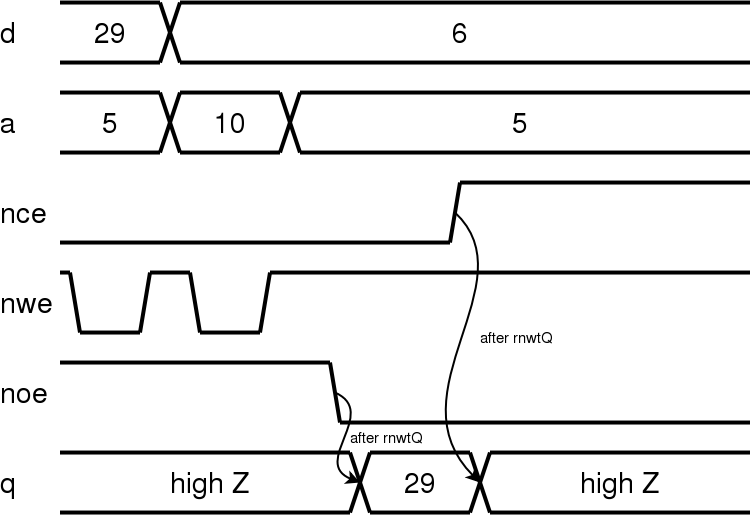
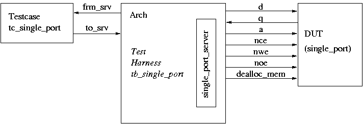

A VHDL simulation model for an asynchronous static single
port memory is described. The memory is implemented as three different
architectures, a simple one and 2 ones which are optimized for efficient
use of simulator memory. Data and address buses are unconstrained, so
multiple instances with different address and data bus widths can be implemented
in one single design. A testbench is also provided.
|
Port Name |
Type |
Description |
|---|---|---|
|
rnwtQ |
Time |
Time delay until data or tristate appears on q data bus. |
|
d |
STD_LOGIC_VECTOR |
Input data bus, unconstrained |
|
q |
STD_LOGIC_VECTOR |
Output data bus, unconstrained |
|
a |
STD_LOGIC_VECTOR |
Address bus, unconstrained |
|
nce |
STD_LOGIC |
not chip enable |
| nwe |
STD_LOGIC |
not write enable |
| noe |
STD_LOGIC |
not output enable |
|
dealloc_mem |
BOOLEAN |
When set to true, deallocate linked list memory. |
All 3 architectures functionally behave like commercially available asynchronous SRAMs if you connect d and q to the same bus. If a memory location is read which was not written to during the current simulation, 'U's are loaded onto the memory bus.
| nce |
nwe |
noe |
d |
q |
Mode |
|---|---|---|---|---|---|
| 1 |
don't care |
don't care |
don't care |
high Z |
deselected |
| 0 |
1 |
1 |
don't care |
high Z |
output disabled |
| 0 |
0 |
don't care |
input data |
high Z |
write |
| 0 |
1 |
0 |
don't care |
RAM content |
read |
This architecture implements the memory core as an array of STD_LOGIC_VECTOR. This is the simplest architecture. It is provided for comparison with the models below but not recommended for use in your design.
This architecture implements the
memory core as an array of BIT_VECTOR. This arrangement allows less workstation
memory to be used than the ArrayMemNoFlag architecture. Use this architecture
if most addresses in the simulated memory are written at least once.
Clearing both nce and nwe to to '0' immediately causes a write operation. Changing the address while nce and nwe are asserted causes a write to the new address, too (But don't do that with real RAMs because you could destroy more memory locations while the address bus settles). Every read (and tristate) operation is delayed rnwtQ ns. The below sample timing diagram illustrates both a read and write operation.

The test bench is arranged as a client server architecture as specified by Bergeron1. A diagram illustrating the testbench is given below.

Two tests are specified in tc_single_port component. The first test
writes data to two logical memory pages, and then reads them back verifying
the correct data. The test case writes an error message to the console
for every miscompare. The second case verifies that the single_port memory
model outputs unknowns to the q bus if a read occurs for an unwritten memory
location. Six configurations are specified in the test bench architecture
tb_single_port, running both tests for each single_port architecture.
A Makefile is used to compile and run all of the tests in a Unix or like environment, such as Cygwin. The compilation and simulation is targetted to the SymphonyEDA tool available at www.symphonyeda.com.
The source files and Makefile are located in {top}/VHDL
To compile: make com
To simulate all of the tests: make sim
To clean the compiled library: make clean
The tests are labeled :
To simulate any of these tests, type make {testname}
Please contact Robert Paley at rpaley_yid@opencores.org or Michael Geng at vhdl@michaelgeng.de if you have any questions or comments.
1Writing
Testbenches , Functional Verification of HDL Testbenches. Chapter 6 –
ISBN 0-7923-7766-4